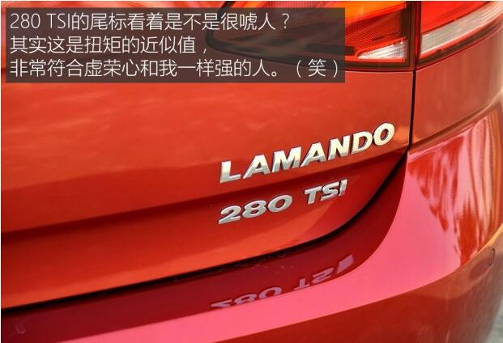
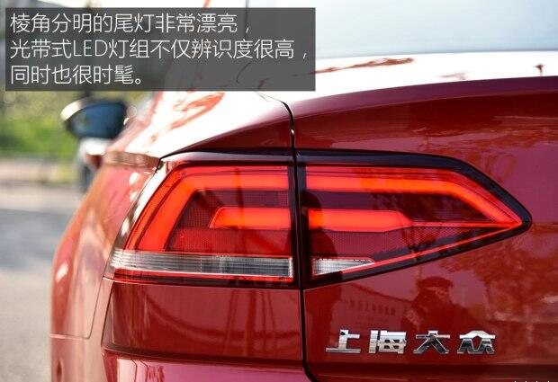
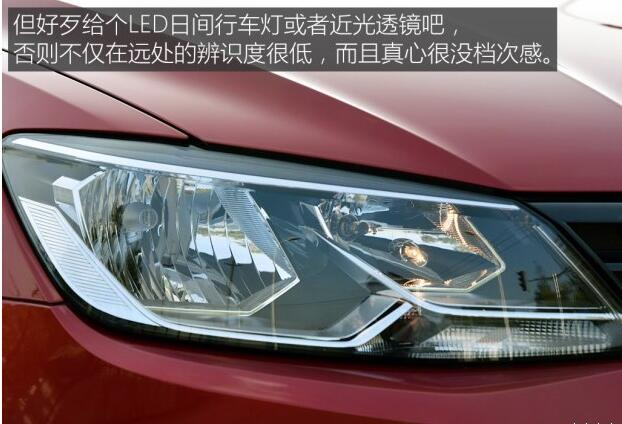

<!DOCTYPE html>
<html>
<head>
    <meta charset="utf-8">
    <meta name="viewport" content="width=device-width,initial-scale=1,minimum-scale=1,maximum-scale=1,user-scalable=no" />
    <title>车友圈-详情</title>
 	<link rel="stylesheet" type="text/css" href="../resources/css/com/com.css"/>
    <link rel="stylesheet" type="text/css" href="../resources/css/news/news-main.css"/>
	<script src="../resources/js/jquery/jquery.min.js" type="text/javascript" charset="utf-8"></script>
    <script src="../resources/js/common/common.js" type="text/javascript" charset="utf-8"></script>
    <script src="../resources/js/mui/mui.js" type="text/javascript" charset="utf-8"></script>
</head>
<body>
	<!-- 头部 -->
	<header class="header">
		<span class="back mui-action-back"></span>
		<h1>车友圈</h1>
	</header>
	<h2>油耗低/驾驶品质优秀 上汽大众凌渡长测</h2>
	<div>
		<span class="times">2015-11-29</span>
		<span class="name">彭储文</span>
	</div>
	<p>上海大众凌渡于今年1月正式上市，这款紧凑型的轿车凭借低矮的造型，凌厉的线条，很好地营造出了轿跑车的视觉效果。相比自家的另一款紧凑车型——朗逸，凌渡的定位更高，自然价格也就上去了。而从销量来看，从刚推出时的6000多台，到9月份的9000多，整体呈逐步攀升的态势，因此也能说明消费者对于这款车型的认可度也在逐步增加。此次我们编辑部就迎来了一台凌渡 280TSI 舒适版，这台车给我的第一印象是造型不错，然而在配置方面，与竞品做简单对比后，我们觉得并不算高，比较一般，后文会详细说明。在接下来为期半年的长测中，希望能和凌渡车主以及关注凌渡的朋友们一同分享我的用车经验。</p>
	
	<p>● 为什么选择“280TSI DSG舒适版”这个配置？</p>
	<p>我们长测的这台凌渡 280TSI DSG舒适版（下文简称280TSI舒适版）官方指导价为18.39万元，目前在上海地区享有2.5万元左右的市场优惠，外加发动机排量仅为1.4L，因此还符合国家购置税减半政策以及3000元节能减排惠民补贴。算上保险、购置税、车船税等等……全部办完不带车牌大约18万元不到就能办妥。</p>
	
	<p>● 我对于凌渡的第一印象</p>
	<p>说起来这是我第二次做凌渡的选题了，第一次还是在去年10月份，当时这台车还未正式上市，而且我也只是配合我的同事朱力神拍摄了它的内饰（点击阅读凌渡内饰体验文章），当时好多车一台贴着一台挤在停车场里，对外观根本看不清，所以脑海中也没啥概念。</p>
	
	<p>● 配置表现一般，但也够用</p>
	<p>首先我承认，我这人有些虚荣，这台凌渡虽然“长”得还不错，但那一对卤素大灯真是有些拉低身价。当然了，这个价位的合资紧凑型车带氙气大灯的并不多，但好歹也给个透镜和LED日间行车灯吧？此外没有自动大灯也是让我挺郁闷的，不过好在凌渡在熄火后会自动熄灭大灯，因此如果图省事，让近光灯常亮也是一个办法。</p>
</body>
</html>